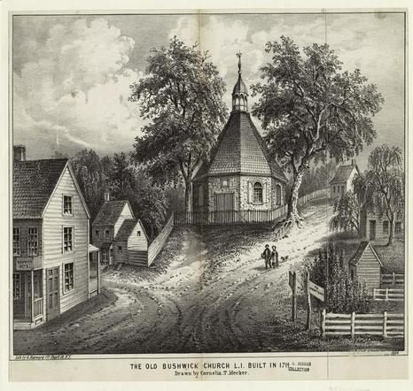
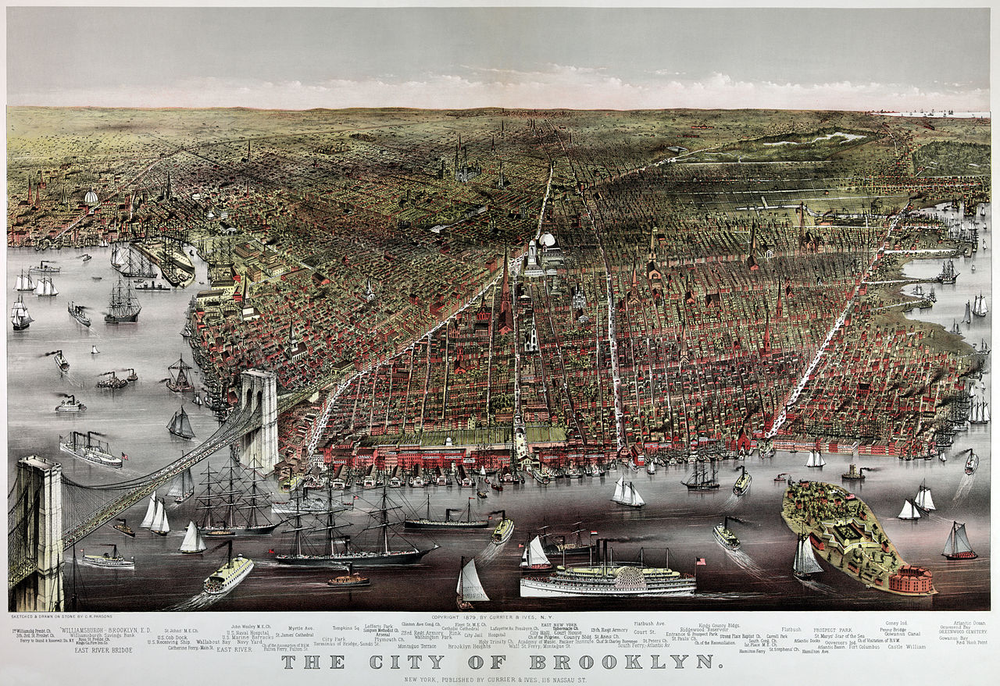
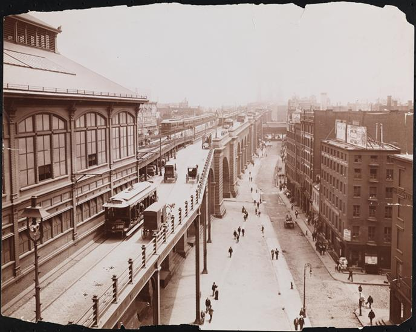
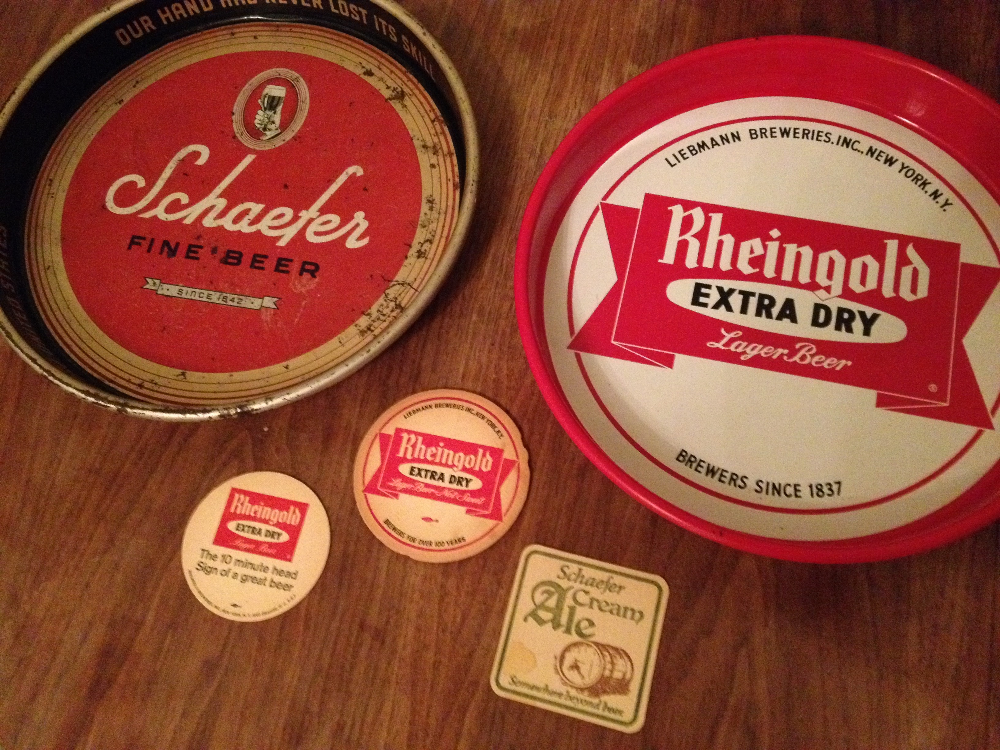

1612
Dutch explorer Adriaen Block, sailing on the Hudson River, builds some small log huts at the tip of Manhattan and starts brewing beer. The first European male to be born in New Amsterdamn, Jan Vigne, even became a brewer.
1661
Peter Stuyvesant establishes Bushwick as a farming community.
1770s
New York Town and Philadelphia are established as colonial brewing centers.
1822
William Johnson opens Brooklyn’s first major commercial brewery.
1855
Williamsburg is annexed into the City of Brooklyn.
1888
The Industrial Revolution has energized Bushwick. By this time, at least 35 breweries are running in Brooklyn producing 1.1 million barrels of beer generating an estimated $8 million revenue annually. More than 2 dozen just in today’s Bushwick.
1898
The City of Brooklyn consolidates with the other boroughs to form New York City.
1920
Prohibition!

1933
The 21st Amendment repeals Prohibition. Breweries can finally start up production again—if they made it this long. Before Prohibition, there were 23 breweries in Brooklyn but after repeal, just 9 reopened.
1949
A brewer’s strike in New York opens the door to mid-western breweries entering the New York market.
1976
Rheingold and Schaefer close. The end of an era.
Today
Hope! There are a host of new breweries in the area bringing craft beer back to its rightful home. Here are a few: Braven Brewery, Kings County Brewers Collective, Interboro Spirits and Ales, and Radiant Pig.
For the full story, here's all my research.